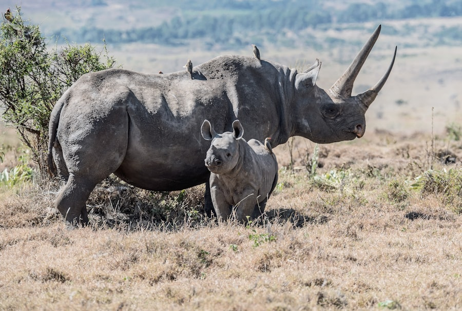

Marsupialia
Os mamíferos com bolsa
Os filhotes nascem extremamente prematuros e completam o desenvolvimento dentro do marsúpio, uma bolsa abdominal materna.
Espécies: Canguru, coala, gambá, cuíca.
Uma jornada pelas criaturas mais admiráveis da terra, do mar e do ar.

Junto com os demais animais terrestres, os mamíferos foram formados no sexto dia da Criação, antes da criação do homem. Foram feitos "segundo a sua espécie", cada qual com características próprias, plenamente funcionais e belos desde o primeiro instante.
Nota: Embora muitos mamíferos vivam em terra firme (criados no sexto dia), alguns — como as baleias e golfinhos — habitam os mares e se relacionam com as criaturas criadas no quinto dia.
Os mamíferos compartilham características únicas que os distinguem entre todos os seres vivos.
As fêmeas produzem leite para alimentar seus filhotes — daí o nome "mamíferos".
Possuem pelos ou pelagem, mesmo que em pequena quantidade, em alguma fase da vida.
São endotérmicos: mantêm a temperatura corporal estável, independentemente do ambiente.
Respiram exclusivamente por pulmões, mesmo as espécies aquáticas como baleias e golfinhos.
A grande maioria gera filhotes vivos no ventre materno (com raras exceções, como o ornitorrinco).
Sistema circulatório duplo e completo, garantindo eficiência máxima na oxigenação.
Músculo exclusivo dos mamíferos que separa o tórax do abdômen e auxilia na respiração.
Demonstram afeto, ensinam e protegem seus filhotes — um reflexo do cuidado de Deus.
Cada ordem reúne mamíferos com características semelhantes. Conheça as doze ordens de mamíferos e suas características.
Os filhotes nascem extremamente prematuros e completam o desenvolvimento dentro do marsúpio, uma bolsa abdominal materna.
Mamíferos aquáticos herbívoros, dóceis e de movimentos lentos. Vivem em águas costeiras quentes e rios.
Possuem articulações vertebrais extras (xenartras). Muitos não possuem dentes ou têm dentição reduzida.
Polegar opositor, cérebro desenvolvido e visão binocular. Vivem em sua maioria nas árvores.
Possuem dois pares de incisivos que crescem continuamente, exigindo constante roer para desgastá-los.
Diferem dos roedores por possuírem quatro incisivos superiores. Patas traseiras longas para grandes saltos.
Asas formadas por uma membrana entre os dedos. Muitos usam ecolocalização para se orientar.
Predadores especializados, com dentes caninos pronunciados. Após a Queda, passaram a se alimentar de carne.
Carnívoros adaptados à vida aquática, mas que ainda dependem da terra para se reproduzir e descansar.
Apoiam o peso em um número ímpar de dedos (geralmente um ou três). Herbívoros de grande porte.
Apoiam o peso em número par de dedos. Muitos são ruminantes, com estômago dividido em câmaras.
Totalmente aquáticos, sem pelos visíveis e com membros anteriores transformados em nadadeiras. Respiram pelo espiráculo.
Alguns mamíferos são de grande utilidade para o homem.
Alguns prejuízos causados pelos mamíferos.
Estes mamíferos passam toda a vida na água — não conseguem sobreviver em terra firme.
Todos os oceanos do mundo, especialmente regiões polares e temperadas.
Mares tropicais e temperados; algumas espécies habitam rios da América do Sul.
Distribuída por todos os oceanos, do Ártico à Antártica.
Rios, estuários e águas costeiras da Amazônia, Caribe e África Ocidental.
O maior animal que já existiu sobre a face da Terra — maior até mesmo que os maiores dinossauros conhecidos.
Onde vive: em todos os oceanos do planeta, com preferência por águas frias e profundas, migrando entre regiões polares (no verão, para se alimentar) e tropicais (no inverno, para reproduzir-se).
Como se alimenta: filtrando a água através das suas barbatanas (placas córneas que substituem os dentes). Abre a enorme boca, engole milhares de litros de água e expulsa o líquido, retendo o alimento.
O que come: principalmente krill — pequeninos crustáceos. Pode consumir até 4 toneladas por dia.
Registro de algumas espécies de mamíferos silvestres.
Era ainda madrugada quando saímos do acampamento, com o orvalho prateando o capim e o cheiro de mata úmida no ar. O silêncio da serra era quebrado apenas pelo canto distante dos pássaros e pelo nosso passo cuidadoso. Foi então que, à beira de um pequeno riacho, vimos a primeira capivara — calma, vigilante, com seus filhotes seguindo atrás como pequenas sombras.
Nas horas seguintes, a Criação se desdobrou diante de nós: um tatu-galinha fuçando a serapilheira, dois macacos-prego saltando entre os galhos do ipê, o vulto rápido de um tapeti cruzando a trilha. Ao entardecer, deitados no campo, vimos os morcegos-frugívoros riscarem o céu rosado em busca de figos maduros.
Ao final do dia, com o caderno cheio de anotações e o coração cheio de gratidão, pude entender melhor o salmista: "Quão variadas são, ó Senhor, as tuas obras! Todas as fizeste com sabedoria; cheia está a terra das tuas riquezas." (Sl 104:24). Cada mamífero observado foi mais do que uma espécie identificada — foi um lembrete vivo de que somos parte de uma Criação cuidadosa, intencional, amada por Aquele que a fez.
Detalhes fascinantes que revelam o cuidado do Criador em cada espécie.
Pesa cerca de 180 kg — o som de seus batimentos pode ser ouvido a mais de 3 km de distância.
Morcegos e golfinhos enxergam pelo som — uma tecnologia que o homem ainda tenta replicar.
Pode pular até 9 metros de uma só vez. O filhote nasce do tamanho de um feijão.
É mamífero, bota ovos, tem bico de pato, cauda de castor e veneno. Combinação rara na natureza.
Reconhecem dezenas de indivíduos, choram seus mortos e visitam os locais de sepultamento.
Move-se tão lentamente que algas crescem em seu pelo, formando uma camuflagem viva.